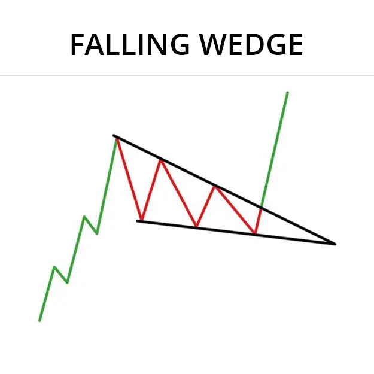
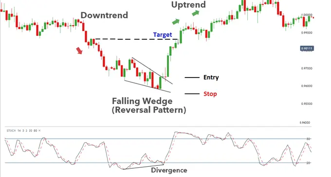

Un pico descendente es un patrón de gráfico formado por dibujar dos líneas de tendencia descendentes, una que representa altos y otra que representa bajos.
Se clasifica como un patrón de gráfico de reversión bullish.
La inclinación de la línea de la tendencia que representa los altos es menor que la inclinación que representa las bajas, lo que indica que los altos están disminuyendo más rápidamente que los bajos.
Se necesitan al menos cinco reversiones (dos para una línea de tendencia y tres para la otra línea de tendencias) para formar un buen patrón Falling Wedge.
La forma resultante forma una cuña que se estrecha gradualmente, dando a este patrón su nombre.

Debido a que las líneas de tendencia que describen la tendencia descendente están descendiendo, las tendencias descendentes a veces se piensan erróneamente como patrones de continuación para una tendencia general hacia abajo.
La aparente tendencia hacia abajo en el precio invita a los comerciantes de orejas a seguir vendiendo, mientras que los comercios de orillas siguen comprando lo que mantiene la fuerte línea inferior de apoyo.
Dado que el precio se niega a romper el nivel inferior de apoyo, la presión de venta disminuye
gradualmente, el nivel superior de resistencia se rompe, y el precio rompe y comienza una fuerte
tendencia ascendente.
La caída de la cuña debe ser tomada como una fuerte señal de compra y una indicación de
que una reversión de la tendencia es inminente.
Una cuña caída es lo opuesto a una cuña ascendente. Las cajas caídas a menudo
vienen después de un climax trough (a veces llamado un “pánico”), una repentina reversión de
una tendencia ascendente, muchas veces en un gran volumen.
En este escenario, el precio dentro de la cuña de caída generalmente no se espera
que caiga por debajo del valor de pánico, terminando en romper la línea de tendencia superior.
Durante la formación del patrón, el volumen es más probable que disminuya.
Se espera un mejor rendimiento en cajas con alto volumen en el punto de breakout.
Se dice también que las lagunas antes de la breakout mejoren el rendimiento.
En el escenario raro en el que una cuña en caída está siguiendo una tendencia ascendente,
el patrón muestra una disminución gradual del precio. En la mayoría de los casos, el precio
terminará rompiendo la línea superior, continuando la tendencia anterior.
Ejemplo de gráfico en vivo:
